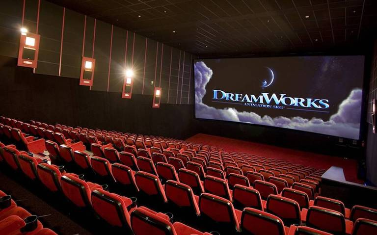

La historia del cine ha experimentado una evolución constante desde sus inicios en el siglo XIX. A lo largo de las décadas, el cine ha pasado por diferentes etapas y ha sido influenciado por avances tecnológicos, sociales y culturales.
En el siglo XX, el cine experimentó una edad de oro en Hollywood, con la creación de grandes estudios cinematográficos y la consolidación de géneros como el cine negro, el western y el cine de ciencia ficción. Directores como Orson Welles, Billy Wilder y Stanley Kubrick dejaron su huella en la industria con películas icónicas que han perdurado en el tiempo.
En las últimas décadas, el cine ha seguido evolucionando con la llegada de nuevas tecnologías como los efectos especiales digitales, la animación por computadora y el cine en 3D. Esto ha permitido la creación de producciones cada vez más espectaculares y visualmente impactantes.
Además, el cine contemporáneo ha ampliado su alcance a nivel global, con la diversificación de historias y la representación de diversas culturas en la pantalla grande. Películas de diferentes países y regiones han ganado reconocimiento internacional, enriqueciendo la oferta cinematográfica y promoviendo la diversidad en la industria.
En la actualidad, el cine sigue siendo una poderosa forma de arte y entretenimiento que continúa capturando la imaginación de audiencias en todo el mundo. A través de plataformas de streaming y servicios de video on demand, el cine ha ampliado su alcance y ha adaptado sus formas de distribución a los cambios en los hábitos de consumo audiovisual. Con la constante innovación y creatividad de cineastas y profesionales del sector, el cine sigue siendo un medio relevante y en constante evolución en la cultura contemporánea: 📺.
